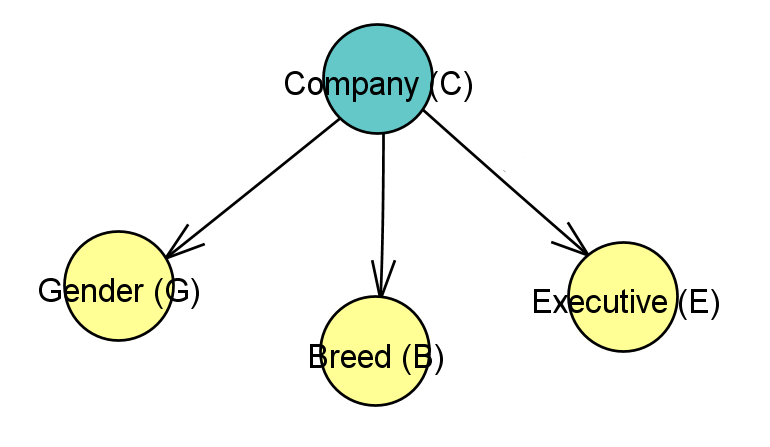

Expectation Maximization (EM)
Usually, we can estimate the parameters of a Bayes Net when all the variables are observed. But, what if some variables are hidden? In those cases, expectation maximization (EM) is used to estimate parameters.
The CompawnyLet's say we have a group of dog employees from two elite companies. We know that they each have the following traits:
We can observe these attributes about the dogs, but what we don't know is which company they belong to (C=0 or C=1). |

|
The Compawny
For each dog, we observe that G ∈ {0, 1}, B ∈ {0, 1}, and E ∈ {0, 1}, but C is hidden from us.
We have the following observed totals:
| G=0 (male) | G=1 (female) | ||||
|---|---|---|---|---|---|
| E=0 (regular) | E=1 (executive) | E=0 (regular) | E=1 (executive) | ||
| B=0 (Husky) | 322 | 52 | 150 | 24 | |
| B=1 (Shiba Inu) | 197 | 68 | 471 | 73 | |
But we don't know anything about the relationship between the dogs and which company they belong to... and that's where EM comes in!
EM: the E & the M
EM is an iterative algorithm made up of two steps:
The E-step: Expectation
Fill in expected values for missing data based on the observed data
The M-step: Maximization
Recompute parameters with ML formula, using the expected values entered in the E-step as if they were observed values.
These two steps repeatedly iterate, and with each step the values get closer and closer to the true parameters.
The Problem
The probabilities we are trying to solve for in our model are the base probability and probability for one of each of the attributes, given both of the companies. In other words, we are trying to solve for the probabilities P(C=0), P(G=0|C=0), P(G=0|C=1), P(B=0|C=0), P(B=0|C=1), P(E=0|C=0), and P(E=0|C=1).
E-step
For our E-step, we need to fill in the expected values of what we don't know (which is all of them)! Thus, we fill in the values randomly with valid probabilities. Another option is to base the values off any beliefs we may have based on the currently observed values. There's no need for the values to be correct.
Let's say the probabilities have the following randomly selected values:
P(C=0) = 0.7
P(G=0|C=0) = 0.5
P(G=0|C=1) = 0.4
P(B=0|C=0) = 0.8
P(B=0|C=1) = 0.3
P(E=0|C=0) = 0.4
P(E=0|C=1) = 0.5
Note that when choosing probabilities, it's best to choose them randomly even when you have beliefs. It's also best to avoid choosing 0 or 1, because it's possible the iterations of the E and M steps may get stuck.
E-step
First, we use our expectations as our expected values for the zeroth iteration!
| Parameters | Iter 0 | ... |
|---|---|---|
| P(C=0) | 0.7 | ... |
| P(G=0|C=0) | 0.5 | ... |
| P(G=0|C=1) | 0.4 | ... |
| P(B=0|C=0) | 0.8 | ... |
| P(B=0|C=1) | 0.3 | ... |
| P(E=0|C=0) | 0.4 | ... |
| P(E=0|C=1) | 0.5 | ... |
But what do we do with these values now?
M-step: Nodes with no parents
If we knew the count of dogs from each company, the probability of a dog being from Company 0 would be the count of dogs from Company 0 over the total number of dogs.
$$P(C=0) = \frac{count(C=0)}{T}$$Unfortunately, we don't have that information. But we can estimate this count by summing the probabilities of each of the dogs being from Company 0 given its traits. In other words, we want to find:
$$count(C=0) = \sum_{t=1}^TP(C=0 | G=g^{(t)}, B=b^{(t)}, E=e^{(t)})$$Next, we can use product rule to transform the equation into:
$$\sum_{t=1}^T\frac{P(C=0, G=g^{(t)}, B=b^{(t)}, E=e^{(t)})}{\sum_{c}P(C=c^{(t)}, G=g^{(t)}, B=b^{(t)}, E=e^{(t)})}$$Then, given the rules of conditional probability, this equation can be further simplified into:
$$\sum_{t=1}^T \frac{P(C=0)P(G=g^{(t)}|C=0)P(B=b^{(t)}|C=0)P(E=e^{(t)}|C=0)}{\sum_{c}P(C=c)P(G=g^{(t)}|C=c)P(B=b^{(t)}|C=c)P(E=e^{(t)}|C=c)}$$Notice that we know all the terms in this equation — they are the expected values we randomly chose before!
M-step: Nodes with no parents
$$\sum_{t=1}^T \frac{P(C=0)P(G=g^{(t)}|C=0)P(B=b^{(t)}|C=0)P(E=e^{(t)}|C=0)}{\sum_{c}P(C=c)P(G=g^{(t)}|C=c)P(B=b^{(t)}|C=c)P(E=e^{(t)}|C=c)}$$The equation sums over T, but because we know the total counts of dogs with each combination of traits, we can group like dogs together. We find the probability of a single dog being from Company 0 given its set of traits, and multiply that probability by the total count of dogs with that combination of traits. We do this for all 8 combinations of different traits and then sum these together to get the final count.
M-step: Nodes with parents
However, applying the M-step to nodes with parents is different than nodes without parents. Let's try to find the probability of a Male (G=0) dog given they are from Company 0. If we knew the number of male dogs from Company 0, we could calculate the probability using the following equation:
$$P(G=0|C=0) = \frac{count(G=0, C=0)}{count(C=0)}$$Unfortunately, we don't have that count. However, notice that count(C=0) is one of the terms we just solved for in the last step! Now all we need to do is find the value of count(G=0, C=0).
Solving for count(G=0, C=0) is very similar to calculating count(C=0), except that G is 0 in the equation:
$$count(G=0, C=0) = \sum_{t=1}^TI(0, g^{(t)})P(C=0 | G=0, B=b^{(t)}, E=e^{(t)})$$where
$$P(C=0 | G=0, B=b^{(t)}, E=e^{(t)}) = \sum_{t=1}^T\frac{P(C=0)P(G=0|C=0)P(B=b^{(t)}|C=0)P(E=e^{(t)}|C=0)}{\sum_{c}P(C=c)P(G=0|C=c)P(B=b^{(t)}|C=c)P(E=e^{(t)}|C=c)}$$The primary difference otherwise is the I function, which is called an indicator function. It takes two parameters and checks to see if they the same. If they are, it returns 1, otherwise 0. Because the summation sums over all T values but we are only interested in t values where G is 0, we use the indicator to only include t's that have a G value of 0 in the summation.
First iteration
Using the equations we just derived, we solve for the values of our parameters, filling in Iteration 1.
| Parameters | Iter 0 | Iter 1 | ... |
|---|---|---|---|
| P(C=0) | 0.7 | 0.5547 | ... |
| P(G=0|C=0) | 0.5 | 0.5807 | ... |
| P(G=0|C=1) | 0.4 | 0.3340 | ... |
| P(B=0|C=0) | 0.8 | 0.6188 | ... |
| P(B=0|C=1) | 0.3 | 0.1358 | ... |
| P(E=0|C=0) | 0.4 | 0.8262 | ... |
| P(E=0|C=1) | 0.5 | 0.8573 | ... |
Estimating parameters
And if we do the iteration once more...
| Parameters | Iter 0 | Iter 1 | Iter 2 | ... |
|---|---|---|---|---|
| P(C=0) | 0.7 | 0.5547 | 0.5494 | ... |
| P(G=0|C=0) | 0.5 | 0.5807 | 0.6308 | ... |
| P(G=0|C=1) | 0.4 | 0.3340 | 0.2757 | ... |
| P(B=0|C=0) | 0.8 | 0.6188 | 0.6372 | ... |
| P(B=0|C=1) | 0.3 | 0.1358 | 0.1191 | ... |
| P(E=0|C=0) | 0.4 | 0.8262 | 0.8313 | ... |
| P(E=0|C=1) | 0.5 | 0.8573 | 0.8507 | ... |
But one or two iterations aren't enough for the values to converge. So what happens when we run the EM algorithm on the expected values over and over and over?
Estimating parameters
If we iterate 5000 times, we see the following results:
| Parameters | Iter 0 | Iter 1 | Iter 2 | ... | Iter 4998 | Iter 4999 | Iter 5000 |
|---|---|---|---|---|---|---|---|
| P(C=0) | 0.7 | 0.5547 | 0.5494 | ... | 0.4911 | 0.4911 | 0.4911 |
| P(G=0|C=0) | 0.5 | 0.5807 | 0.6308 | ... | 0.9587 | 0.9587 | 0.9587 |
| P(G=0|C=1) | 0.4 | 0.3340 | 0.2757 | ... | 5.3372e-36 | 5.2568e-36 | 5.1776e-36 |
| P(B=0|C=0) | 0.8 | 0.6188 | 0.6372 | ... | 0.5852 | 0.5852 | 0.5852 |
| P(B=0|C=1) | 0.3 | 0.1358 | 0.1191 | ... | 0.2286 | 0.2286 | 0.2286 |
| P(E=0|C=0) | 0.4 | 0.8262 | 0.8313 | ... | 0.8122 | 0.8122 | 0.8122 |
| P(E=0|C=1) | 0.5 | 0.8573 | 0.8507 | ... | 0.8669 | 0.8669 | 0.8669 |
By the 5000th iteration, we see that the numbers have converged.
Does random really work?
But what if we chose some other random values in the initial iteration? Let's try with these different random numbers:
| Parameters | Iter 0 | ... |
|---|---|---|
| P(C=0) | 0.6 | ... |
| P(G=0|C=0) | 0.4 | ... |
| P(G=0|C=1) | 0.6 | ... |
| P(B=0|C=0) | 0.2 | ... |
| P(B=0|C=1) | 0.1 | ... |
| P(E=0|C=0) | 0.2 | ... |
| P(E=0|C=1) | 0.4 | ... |
Does random really work?
After running through the EM algorithm 5000 times, we see the following results:
| Parameters | Iter 0 | Iter 1 | Iter 2 | ... | Iter 4998 | Iter 4999 | Iter 5000 |
|---|---|---|---|---|---|---|---|
| P(C=0) | 0.6 | 0.5227 | 0.5232 | ... | 0.4910 | 0.4910 | 0.4910 |
| P(G=0|C=0) | 0.4 | 0.4177 | 0.4421 | ... | 0.9589 | 0.9589 | 0.9589 |
| P(G=0|C=1) | 0.6 | 0.5290 | 0.5024 | ... | 1.2839e-35 | 1.264e-35 | 1.2456e-35 |
| P(B=0|C=0) | 0.2 | 0.4556 | 0.4333 | ... | 0.5852 | 0.5852 | 0.5852 |
| P(B=0|C=1) | 0.1 | 0.3470 | 0.3714 | ... | 0.2287 | 0.2287 | 0.2287 |
| P(E=0|C=0) | 0.2 | 0.7908 | 0.7958 | ... | 0.8122 | 0.8122 | 0.8122 |
| P(E=0|C=1) | 0.4 | 0.8940 | 0.8886 | ... | 0.8669 | 0.8669 | 0.8669 |
Even though this set started with different initial expected values, they still ended up converging to very similar values.
And that's Expectation Maximization!
Congratulations on finishing this! :)